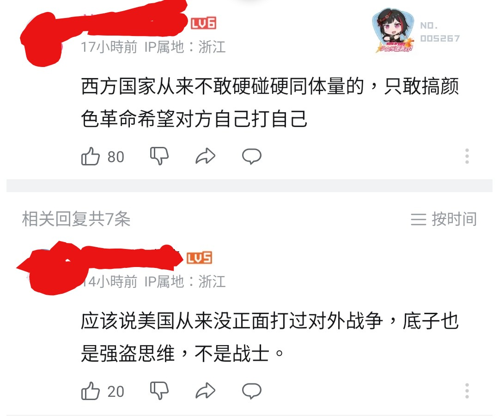
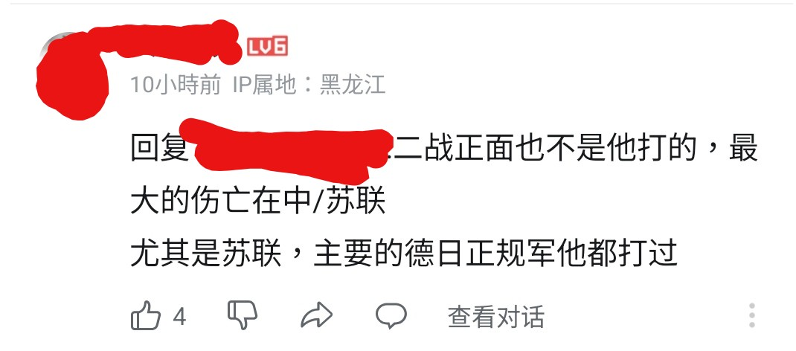

星野ふじ
@hoshinofujivy
@NationalPureVF4 为什么还打码呢


Beast I/H「救贖」- 織田真理子
@NationalPureVF4
人民史觀：二戰正面也不是他打的，尤其是蘇聯，德日正規軍他都打過
美國：我打的日本聯合艦隊跟德國狼群，還有北非、西歐的隆美爾跟東南亞的日本甲級師團就不是正規軍了，原來我在二戰只是重在參與？
那我這轟炸不是白炸了嗎，早知道就不轟炸西歐和羅馬尼亞油田了，跟日本談和平然後繼續賣他石油資源 https://t.co/j3ubgExTmW